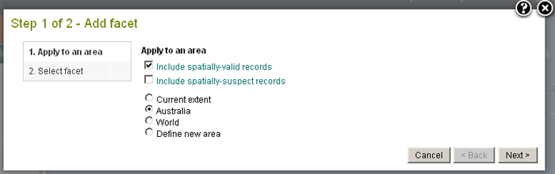
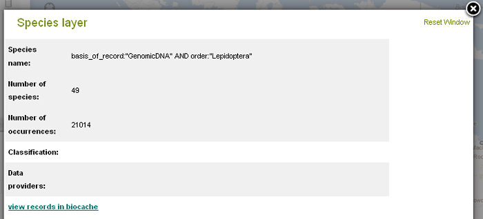
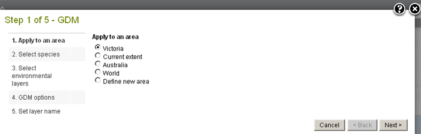
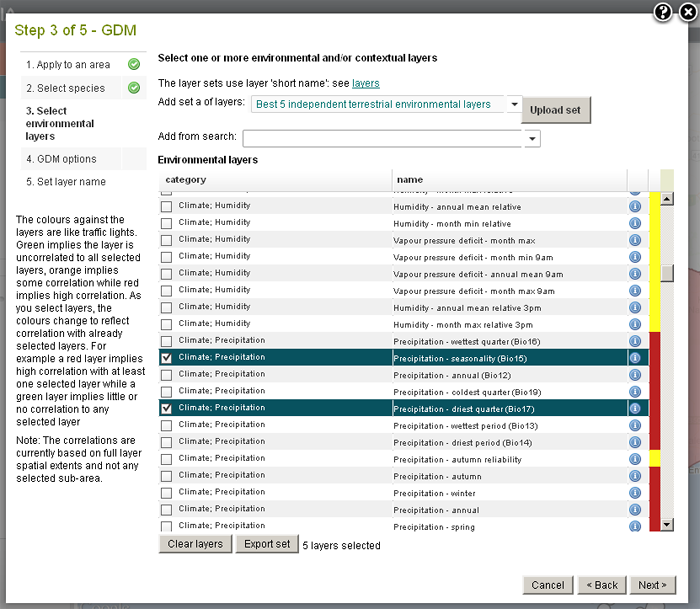
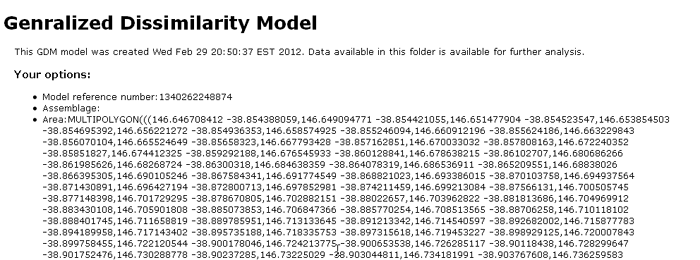
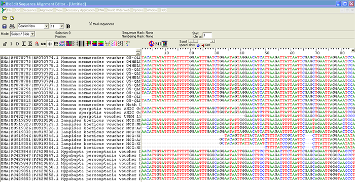

How are annotations to records returned to the data provider?
The best way to do this is to set up a filter for the records you are interested in, and then create an alert that will send you a regular email (hourly, daily, weekly, or monthly).
The best way to do this is to:
1. Go to the ALA home page, select Data sets, or use the link below.
http://www.ala.org.au/data-sets/.
2. On the left of the page is the ‘Search for occurrences records’ field, enter a search term, e.g. ‘South Australia’, ‘amphibians’, ‘natural resources’, or leave it blank to see all 33+ million records.

Occurence records filtered on South Australia and Amphibians
3. You can refine your search by clicking the links on the left hand side to narrow down the information that is displayed, e.g. State/Territory, Institution, Class. You can view the selected records on a map, or statistically in the form of charts, by selecting the tabs above the records list.
4. To receive an email alert when any of your selected records are annotated, or new records meeting the criteria are added, click the ‘Alerts’ button which is located just below the ‘Records’ tab.
This functionality can be used for anyone interested in a particular data set, not just the owners of the data set, in order to see any newly added records or annotations to selected data set.

Press the View your current alerts, to see the enabled annotation alert.

Annotations on SA Frogs
How can a data provider can access (in bulk) records which have identified validation issues?
1. Go to the ALA home page, select Data sets, or use the link below.
http://www.ala.org.au/data-sets/
2. On the left of the page is the ‘Search for occurrences records’ field, enter a search term, e.g. ‘South Australia’, ‘amphibians’, ‘natural resources’, or leave it blank to see all 33+ million records.
3. You can refine your search by clicking the links on the left hand side to narrow down the information that is displayed, e.g. State/Territory, Institution, Class.
4. In the same left hand side column there is a facet group called ‘Record Issues’. By clicking the issue you are interested in you can create an email alert by clicking the ‘Alerts’ button under the ‘Records’ tab. If you want to be alerted about more than one issue, select the square symbol next to ‘Record Issues’ and a drop-down box appears giving you the ability to choose more than one.
5. Below the ‘Records’ tab, click the ‘Downloads’ button, this will download your selection as a data set. You will receive a file in CSV format, which can be opened as a spreadsheet. There are a few restrictions on use of the data. Please refer to the metadata that comes with the CSV file.
Occurence records filtered on South Australia and Amphibians

Checking your alerts
Pressing the My Profile in the ALA header takes you to your My Profile page, after you have logged in. From here you can go to Manage your alerts. See example images below.
Article
Facet (Add to Map)
The Add to Map - Facet allows the user to add all occurrence records for one or more classes of a species attribute (facet) or class derrived from a contextual layer to the map (see image below for the choices of facet).
Note, this option does not allow for the faceting of previously defined areas, or for the use of species or species assemblages layers. However, occurence records can be filtered by an area defined during the process, as explained below.
An example of a facet would be for all occurrence records with a ‘Lifeform’ class of ‘Fungi’, ‘Chromista’ etc., or as having a ‘Basis of record’ class of ‘GenomicDNA’, or ‘Data Provider’ class of ‘Barcode of Life’ (BOLD). (See images below).
Add to Map Facet menu option
From the menu option, select ‘Add to Map’, and then ‘Facet’.

Add Facet to a selected area
It is best to choose only spatially-valid records, unless this yields too few records for the application. The ‘Define new area’ will involve an extra step (please refer to Add Area for additional information).
Choose one or more classes from the selected facet.
The current facet-able variables are (but these can change as new data is added):
| ————— Custom ————— |
| Dataset |
| data_provider |
| Coordinate uncertainty (in metres) |
| Date (by decade) |
| ————— Taxonomic ————— |
| Scientific name |
| Scientific name (unprocessed) |
| Common name (processed) |
| Subspecies |
| Genus |
| Family |
| Order |
| Class |
| Phylum |
| Kingdom |
| Lifeform |
| Identified to rank |
| Species interaction |
| Species habitats |
| ————— Geospatial ————— |
| Country |
| State/Territory |
| Local Gov. Area |
| Dynamic land cover |
| IBRA 7 regions |
| IMCRA 4 regions |
| Sensitive records |
| Spatial validity |
| State conservation status |
| State conservation status (unprocessed) |
| Vegetation types - native |
| Vegetation types - present |
| ————— Temporal ————— |
| Month |
| Year |
| Decade |
| ————— Record details ————— |
| Record type |
| Specimen type |
| Multimedia |
| Collector |
| ————— Attribution ————— |
| User |
| Dataset |
| Provenance |
| ————— Record assertions ————— |
| Associated records |
| Record issues |
| Assertions by user |
| Outlier layer count |
| Outlier for layer |
| Taxon identification issue |
If the number of classes within the facet is large, the classes will be paged. Paging of classes will also occur when selecting classes from facets on the map legend.
Three example facet images are shown below. Only one facet can be chosen but subsequent faceting of the mapped layer can be done using the layer legend (see below).
The following example, shows the resultant map after choosing to Add to Map a facet of ‘Basis of Record’ and selecting the class of ‘GenomicDNA’. Currently, only one data set in the Atlas, the ‘European Molecular Biology Laboratory Australian Mirror (EMBL)’ holds records labelled as molecular data. The layer had been renamed to ‘GenomicDNA’, by pressing the ‘Rename’ button and renaming the layer.
Once the occurrence layer is mapped, the records can be further filtered and faceted on all facetable fields using the existing legend tools. The image above shows the facet options in the legend. See Faceting and Filtering for more info »
In the example to the right and below, for the GenomicDNA faceted layer, we can choose to facet on ‘Order’ and choose the class, ‘Lepidoptera’.
Pressing the ‘Create layer’ button creates the new faceted layer that has all occurrences that include Genomic DNA data for Lepidopteran records (Butterflies and Moths).
The Spatial portal displaying molecular occurrence data for the Order Lepidoptera, with an additional area added to the map.
In the image above, an area around Forbes has been added. The user can choose to selectively download only those records within the area. See Add Areas to Map » and Export Point Sample »
When the layer metadata icon icon is clicked in the layers list the metadata popup is displayed for the Faceted layer. The metadata can be displayed in a separate window.

Metadata for GenomicDNA and Lepidoptera facet
Article
Scatterplot List
The Scatterplot List allows for the plotting of a taxa or species assemblage occurrence records across all pairs of selected environmental layers. This includes any environmental-type layers from prior analysis.
This tool provides a powerful way of identifying layers/variables that appear related in some way to species distributions. The user can then redo these Scatterplots individually to further investigate the relationships between the environments given by the two environmental axes of the Scatterplot, for each occurrence record.
Scatterplot List menu option
From the menu option, select ‘Tools’, and then ‘Scatterplot List’.
Note the ‘Define new area’ will involve an extra step (please refer to Add Area for additional information). In this example the state of Victoria has been pre-defined and selected from the ‘States including coastal waters’ contextual layer.
It would usually be wise to use only points for occurrences that are deemed spatially valid, unless this yields far too few records. The more comprehensive and consistent the occurrence records are, the better the results are likely to be.
Species assemblages and the import of species location points are also methods that can be used for the occurrence points on the scatterplots.
Highlight active area occurrences. Selecting this option will highlight those occurrences on the scatterplot occurring within a map’s defined active area. This option is best for highlighting a sub-region to show where points of a spatially distinct area fall within the ‘environmental space’ defined by the two environmental axes. Refer to Add Area for additional information.
The ‘My Area 1’ is the sub-region that will be highlighted in the list of scatterplot images below ».
There are many ways to select the environmental layers. You can take a quick look using the best five independent terrestrial layers. You can also use any previous layer selections, search for layers, paste in a set of layer names or select them individually in the list of environmental layers. If you search for layers remember that you can also search on layer keywords, for example ‘marine’ or ’2030′. As mentioned above, test out various combinations of environmental layers and look out for patterns shown in the display of species points on the scatterplots.
The background taxa group is this case is the genus Eucalyptus. This gives us a good indication of what environments the genus covers and what portion of that environment is covered by E. mellidora. However, choosing a competing species or genus might also be very useful in identifying their (environmental) niche.
List of each of the different combinations of Scatterplot images based on the chosen environmental layers.
List of Scatterplot images for each of the environmental combinations with the chosen background species of Eucalyptus
In these scatterplot images immediately above and below, the points ringed in red come from the selected ‘My Area 1‘ of north-western Victoria.
List of Scatterplot images for each of the environmental combinations with the display environmental areas shown in the background
In these scatterplot images the ‘display possible environments in area’ produce a grey-scale background on the scatterplot that delineates the area of that combination of environments that occur within the full range of possible environmental values. Environmental combinations outside the environmental envelope do not occur in nature and are shown in light blue. The grey-scale: Light colours imply a greater area of the environmental combination than darker colours, thus providing an indication of the spatial extents of the associated environments.
Of course, you can display both the ‘possible environments in an area’ and a background species or species assemblage, together in the list of scatterplot images by choosing the appropriate options.
Article
GDM
Generalised Dissimilarity Modelling (GDM)
This is one of the most complex tools within the Spatial Portal. Inputs to this tool are usually a species assemblage (at a higher taxonomic level) and a suite of environmental layers. The primary outputs from GDM are the input environmental layers transformed to best-align with the spatial distribution of records from the species assemblage. See References for details on the algorithm used.
GDM Menu option
From the menu option, select ‘Tools’, and then ‘GDM’.
Run the GDM wizard

Select an area for the GDM
Note the ‘Define new area’ will involve an extra step (please refer to Add Area for additional information). In this example the state of Victoria has been pre-defined and selected from the ‘States including coastal waters’ contextual layer.
The modelling will use species density, so the more comprehensive and consistent the occurrence records are, the better the results will be. It is best to select taxa at the genus or higher taxonomic level to get better coverage.
Note: For GDM to run, there must be multiple occurrences of the same taxa. If the input data contains only one record of any taxon, an error message will be generated.
Species assemblages and the import of species location points are also means for creating the necessary points on the map for analysis.

Select the environmental layers for the GDM modelling
There are many ways to select the environmental layers. You can take a quick look using the best five independent terrestrial layers (for GDM modelling the more distinct the better). You can also use any previous layer selections, search for layers, past in a set of layer names or select them individually in the list of environmental layers. If you search for layers remember that you can also search on layer keywords, for example ‘marine’ or ‘2030’.
Cells can be filtered by selecting the minimum number of taxa per cell that will be included in GDM.
GDM can be run using equal weighting of cells or a weighting based on the number of taxa per site.
The time taken for GDM to run can be considerable so consider sending it to a background task. To reduce the run time, select a smaller percentage of the site-wise pairs to be used.
The spatial distance between species can also be accounted for in the modelling by choosing to use geographic distance as a predictor.
The zipped file of results are produced.
Zip file of GDM results
The above image shows all the chosen transformed layers overlaid upon each other. Obviously, each layer should be viewed independently.
When the layer metadata icon icon is clicked in the layers list (on the top left) the output from GDM will be displayed showing various statistics such as the contribution of each input layer. This information can be displayed in a separate window.
Explanation of the Fitted Functions
The model output presents the response (compositional turnover) predicted by variation in each predictor. The shape of the predictor is represented by three I-splines, the values of which are defined by the environmental data distribution: min, max and median (i.e., 0, 50 and 100th percentiles). The GDM model estimates the coefficients of the I-splines for each predictor. The coefficient provides an indication of the total amount of compositional turnover correlated with each value at the 0, 50 and 100th percentiles. The sum of these coefficient values is an indicator of the relative importance of each predictor to compositional turnover.
The coefficients are applied to the ecological distance from the minimum percentile for a predictor. These plots of fitted functions show the sort of monotonic transformations that will take place to a predictor to render it in GDM space. The relative maximum y values (sum of coefficient values) indicate the amount of influence that each predictor makes to the total GDM prediction.
Functions and variables used to transform the layers
Example Layers for Victorian Eucalyptus:
- Precipitation - driest quarter (Bio17)
- Precipitation - seasonality (Bio15)
- Radiation - seasonality (Bio23)
- Radiation - warmest quarter (Bio26)
- Moisture Index - highest quarter mean (Bio32)

Defined area for the GDM
References
Ferrier, S. and Guisan, A. (2006). Spatial modelling of biodiversity at the community level. Journal of Applied Ecology 43, 393-404.
Ferrier, S., Manion, G., Elith, J. and Richardson, K. (2007). Using generalized dissimilarity modelling to analyse and predict patterns of beta diversity in regional biodiversity assessment. Diversity and Distributions, 13, 252-264.
Article
New ways to keep in touch
The Atlas has changed its methods for keeping you informed about significant developments.
- We now have a means where you can receive email alerts about new blog posts on the website with a choice of frequencies. This replaces the previous quarterly e-newsletter.
- We have an RSS feed that broadcasts all new blog posts.
- We have a Twitter account that lets you follow incidental Atlas’ stories.
To view all blog updates, click here »
If you previously subscribed to receive the newsletter, we have created an Atlas account for you to receive Atlas blog posts on a monthly basis. You can opt out altogether or change the frequency!
If you wish to have your account deleted and receive no blog post email notifications, please email info@ala.org.au
How to set your blog email alerts
MyProfile & Login in the header
Click the My profile link in the header, then Manage email alerts about new items added to the Atlas. (See images below).
(If you have not logged in you will be initially redirected to the Login page, where you will need to type your registered email and password).
Users without a pre-existing Atlas account
For those of you who asked to receive a newsletter (generally prior to April 2011), but did not have a pre-existing Atlas account - we have created a default account for you - to receive monthly blog posting updates from the Atlas.
Read about details of your default account and resetting your password »
Users with a pre-existing Atlas account
If you had asked to subscribe to the Newsletter in your My Profile, then we’ve changed your account to receive monthly blog posting update alerts from the Atlas.
If you did NOT subscribe to the Newsletter, then we have not set any alerts. However, you might consider signing up for them.
Email Alerts
It is as simple as clicking on Manage email alerts, choosing the frequency in the pull down list and clicking on the alert buttons you require to ‘Enabled’ or ‘Disabled’.
Article
Your new Atlas account
The Atlas has changed its methods for keeping you informed about significant developments via regular blog news postings, RSS and a Twitter account.
The quarterly e-newsletter has been discontinued and replaced with regular blog news items posted on our site. To be alerted about these posts via email you need a My Profile account on the Atlas site.
If you previously subscribed to receive the e-newsletter (generally prior to April 2011) and did not have an Atlas account, we have created one for you in order to send you new Atlas blog postings on a monthly basis. You can opt out altogether or change the frequency.
An Atlas My Profile account allows you to contribute sightings and images to the Atlas, track sessions within the Spatial Portal and ask to be alerted of any new additions to the Atlas, including Atlas blog news postings.
Once you have logged in, you can alter the frequency or enable/disable your blog posting alerts. Read how »
If you wish to have your account deleted and receive no blog post email notifications, please email info@ala.org.au
Default Atlas accounts
In all the headers is a ‘My profile’ and ‘Log in’ (or ‘Log out’) link. Click the Log in link.
MyProfile & Login in the header
The email you registered with us for the Atlas newsletter is the email to use for your Atlas login. Your default Password has been assigned based on the name portion of your email address. That is the characters before the ‘@’ in your email address. If your email name portion is shorter than six characters you will need to repeat your full email name portion, until your password exceeds six characters.
We ask that you reset your password from the default one we provided.
Some Email and Default Password Examples:
| Password | Comments | |
|---|---|---|
| john.doe@gmail.com | john.doe | Greater than 6 chars, use all email name |
| martin@yahoo.com | martin | Exactly 6 chars, use all email name |
| alan@gmail.com | alanalan | Less than 6 chars, repeat email name until >= 6 chars |
| jo@yahoo.com | jojojo | Less than 6 chars, repeat email name until >= 6 chars |
How to reset my password
The Login page has a link to Reset Your Password.
Pressing the ‘Send Password Reset Link’ button will send you a link to your email address allowing you to enter a new password. There is a time limit of 48 hours.
Article
'FieldData software' - citizen science training course
Participants at the FieldData Training Course, February 2012.
Photo courtesy: Robyn Lawrence, Atlas of Living Australia.
- Where the FieldData software fits into the Atlas infrastructure
- How this set of integrated tools can be used to help meet your organisational field data capture, information management and community support goals
- Using the software:
- Understanding how your requirements can be met using the software
- Setting up a FieldData site for your organisation
- Registering and managing users
- Creating field guides and profiles for species of interest in your local area
- Creating survey and activity tracking forms to log sightings and other information
- Uploading existing data into your site
- Viewing your data online in your site and in the Atlas itself (Great Eastern Ranges regions example)
- Downloading data for further analysis and reporting in other tools
- How to add your own look and feel to the site - theming
- Futures - where we can go together from here
Using the FieldCapture tool in the great outdooors
It was especially interesting to learn about the attendees wide-ranging plans for using the FieldData tool to meet diverse needs. Its not just about recording sightings of birds, frogs, plants, fungi … Current portal projects - Feb 2012 (PDF 59KB) The TeachWild group sponsored by Shell, Earthwatch Australia and CSIRO is using the FieldData tool to track marine debris - which includes plastics, fishing lines, you name it - junk that is not meant to be in our marine environment - as well as tracking coastal and marine wildlife.“All the data collected is included on a national debris map overlaid with wildlife distribution patterns for marine species such as birds, fish and turtles, allowing researchers to pinpoint the type of rubbish most dangerous to particular species”.
Dr Denise Hardesty, TeachWild
Read about the recent launch of the TeachWild Marine Debris portal in schools » The Atlas of Life in the Coastal Wilderness (ALCW) is also about to put the FieldCapture tool through its paces. On the 30 and 31 of March 2012, the ALCW is holding a ‘Bioblitz’ for recording as much biological data as they can possibly find over a period of two days in sites around coastal Bermagui in New South Wales. Learn more about the ALCW and join the upcoming Bioblitz » CSIRO researchers are also using the FieldData tool to involve the community across the range of Yellow Box (Eucalyptus melliodora) to collect seed and record information about seed trees and their local environment for a species resilience study. This is involving the non-science community in significant real scientific research work. Several natural resource management (NRM) groups are also using the FieldData tool for recording their various group activities including community events and on-ground works. This will enable them to better track and manage their activities and report on activities and outcomes far more easily and accurately than has ever been possible before.Article
'FieldData software' - citizen science training course
The Atlas of Living Australia recently held a successful three day training workshop for a group of current and new users in the use of its FieldData software.
This online software (also known as the Biological Data Recording System, BDRS) was developed in collaboration with Gaia Resources and is being made available to a broad range of citizen science groups to collect and manage their field-captured data as well as share their information with others through the Atlas.
The course was convened and run by project managers Owen Butler and Peter Brenton from the Atlas, with other guest speakers from the Atlas and users of the FieldData software.
Attendees represented a wide range of organisations and interests with 30 participants representing 15 organisations, including NGOs, local Catchment Management Authorities, several community naturalist groups and research groups within CSIRO.
Participants came from as far away as Townsville and Perth to learn how to use the online open source Atlas tools to manage their field data, and join a growing community of users, plus get the opportunity to enjoy this year’s glorious Canberra summer weather!
FieldData Training Course:
Day 1 – Basic Administration of the FieldData software, Day 2 – Advanced, Day 3 – For Developers.
Participants at the FieldData Training Course, February 2012.
Photo courtesy: Robyn Lawrence, Atlas of Living Australia.
The course featured slides and talks, live demonstrations of the site and hands-on practise in setting up ‘mock-up’ versions of the FieldData portal for entry of ad-hoc and survey material.
The course material covered:
- Where the FieldData software fits into the Atlas infrastructure
- How this set of integrated tools can be used to help meet your organisational field data capture, information management and community support goals
- Using the software:
- Understanding how your requirements can be met using the software
- Setting up a FieldData site for your organisation
- Registering and managing users
- Creating field guides and profiles for species of interest in your local area
- Creating survey and activity tracking forms to log sightings and other information
- Uploading existing data into your site
- Viewing your data online in your site and in the Atlas itself (Great Eastern Ranges regions example)
- Downloading data for further analysis and reporting in other tools
- How to add your own look and feel to the site - theming
- Futures - where we can go together from here
The course concluded with a short excursion by the Fungimap participants to photograph a colony of Deathcap mushrooms.
More on the recent outbreak of Deathcap mushrooms in Canberra »
Using the FieldCapture tool in the great outdooors
It was especially interesting to learn about the attendees wide-ranging plans for using the FieldData tool to meet diverse needs.
Its not just about recording sightings of birds, frogs, plants, fungi … Current portal projects - Feb 2012 (PDF 59KB)
The TeachWild group sponsored by Shell, Earthwatch Australia and CSIRO is using the FieldData tool to track marine debris - which includes plastics, fishing lines, you name it - junk that is not meant to be in our marine environment - as well as tracking coastal and marine wildlife.
“All the data collected is included on a national debris map overlaid with wildlife distribution patterns for marine species such as birds, fish and turtles, allowing researchers to pinpoint the type of rubbish most dangerous to particular species”.
Dr Denise Hardesty, TeachWild
Read about the recent launch of the TeachWild Marine Debris portal in schools »
The Atlas of Life in the Coastal Wilderness (ALCW) is also about to put the FieldCapture tool through its paces. On the 30 and 31 of March 2012, the ALCW is holding a ‘Bioblitz’ for recording as much biological data as they can possibly find over a period of two days in sites around coastal Bermagui in New South Wales. Learn more about the ALCW and join the upcoming Bioblitz »
CSIRO researchers are also using the FieldData tool to involve the community across the range of Yellow Box (Eucalyptus melliodora) to collect seed and record information about seed trees and their local environment for a species resilience study. This is involving the non-science community in significant real scientific research work.
Several natural resource management (NRM) groups are also using the FieldData tool for recording their various group activities including community events and on-ground works. This will enable them to better track and manage their activities and report on activities and outcomes far more easily and accurately than has ever been possible before.
Article
Ways to search the Atlas
Searching the Atlas
There are two main ways to search the Atlas:
- Regular searching of the Atlas (non-occurrence records) - species information pages, data sets, Atlas static HTML site pages
- Search for occurrences records - sightings, specimens, molecular data, images, conservation & sensitive species statuses
In addition, there is a separate subset searching method of 1. Regular searching, for searching Data sets only.
Where to find these search methods
On the Home page. ‘Search the Atlas’ is prominently displayed at the top of the page below the header, and on all other pages as a search field in the header, e.g. on the Blogs & News page. Both ‘Search the Atlas’ methods look for non-occurrence records.
'Search the Atlas' on the Home Page

'Search the Atlas' search field on non-home pages
On the Data sets page, found by clicking the Data sets icon on the home page. Search for occurrences records is on the left, and search for Data sets only is on the right.

Buttons on the home page
Regular searching the Atlas
To ‘Search the Atlas’ for all non-occurrence records, not just data sets (as mentioned above), conduct a search on the home page, or in the search field in the header of every page except the home page.

In the home page of the Atlas, search the Atlas for species information
To reiterate, the ALA home page search, searches the ALA Word Press static HTML pages, all data sets, and species information pages. It does not search for individual occurrence records - sightings, specimens, molecular data, images, conservation & sensitive species statuses - but does find the name and acronym of the data sets holding such records.
Search the Atlas search field
The ‘Search the Atlas’ search field at the top of every non-home page does the same thing.
More detail to be added later »
Searching for occurrence data in the Atlas
To search for individual occurrence records (as mentioned above), click on the ‘Data sets‘ button on the home page. Then click on the ‘Search for occurrences records’ to the left of the page. See image above.
More detail to be added later »
Searching for data sets in the Atlas
Data sets hold digitised occurrence records. They represent many different types of record (as mentioned above).
To search for data sets, click on the ‘Data sets’ button on the home page. Then click on the ‘View data sets’ to the right of the page. See images above.

Results of searching for the data set, 'EMBL'
Click the Data set name e.g., European Molecular Biology Laboratory Australian Mirror, to access the metadata resource page about the data set.
Click the View records to access all occurrence records for the particular data set, in this case the 100,000+ records of ‘EMBL’. See image below.
Or as mentioned above, type in the data set acronym or name into the home page search field, or into the search field in the header in every non-home page.
A result set is returned. It includes the Data set for ‘European Molecular Biology Laboratory Australian Mirror’, plus other records matching the seach term - ‘EMBL’.
Click the Data set name e.g., European Molecular Biology Laboratory Australian Mirror, to access the metadata resource page about the data set.
The user is taken to the Data set resource page for the ‘European Molecular Biology Laboratory Australian Mirror’ (EMBL). Scroll down the page to find the Map of records, and the link to ‘Click to view records for the European Molecular Biology Laboratory Australian Mirror resource‘.
All the occurrence records are displayed for the Data set.
Note: Another way to find to all occurrence records for a data set, is to use the Occurrence record search, but to type in the full name of the data set, in this case ‘European Molecular Biology Laboratory Australian Mirror‘. Typing the acronym will not work, as the occurrence records hold only the full data set name.
More detail to be added later »
How to find Molecular Data
The linked example, Search for Molecular Data, demonstrates how to look for known data sets that contain genetic material.
Plus it shows how to facet the occurrence searches for molecular data, then download the data.
And better still, use the Spatial Portal in a simple yet powerful way to search for molecular data, visually display the records, and download the results.
Article
Searching for molecular data in the Atlas
The following applies for searching any data set in the Atlas, using facets to restrict the occurrence search result set, for querying the Spatial Portal, and for downloading.
We will choose a particular data set, filter (facet) on a particular type of record - in this case those with molecular DNA data, and look for a particular group of organisms.
Of course, you can experiment with your own searches, faceting and downloads …
How to search the Atlas
For general information on how to search the Atlas »
How to search for Data sets
If you are interested in a particular data set, for instance those containing molecular data e.g., the ‘European Molecular Biology Laboratory Australian Mirror’ or ‘BOLD - Australia’, then one way to access their records is to find the data set, view and then optionally download the associated occurrence records.
Currently, only one data set in the Atlas holds records with DNA samples, with a record type of ‘GenomicDNA’. The data set is the ‘European Molecular Biology Laboratory Australian Mirror’, with an acronym of ‘EMBL‘. Read how to search for data sets »
Note: The ‘BOLD - Australia’, (acronym = ‘BOLD’) data set holds molecular data, but currently its record type is set to ‘PreservedSpecimen’ not ‘GenomicDNA’. It is hoped this anomaly will be addressed before long.
Or you could facet (filter) the results of an occurrence search for molecular data, and download the records. Read more »
Or better yet, use the Spatial Portal to search for molecular data, visually display the records, and download the results. Read more »
With the downloaded results you can access other external molecular tools. Read more »
Facet the results of an occurrence search
On the occurrence search page, the search text field matches against any attribute of an occurrence record e.g., scientific name (at any taxonomic level), collector, data set full name etc.
Search the occurrence records for Lepidoptera
In the following detailed example, we match against the order, Lepidoptera, by typing it in the auto-complete Search field.
We facet (filter) the record by clicking the Record Type - ‘GenomicDNA’ - to restrict the selection to only those Lepidopteran records with molecular DNA data. Currently, this data only is available in the EMBL data set, so the ‘European Molecular Biology Laboratory Australian Mirror’ is the only Dataset shown in the available facets list to the left.

Lepidopteran occurrence results faceted for genomic data
The user can further facet the returned results to the user’s specific area of interest by clicking on additional facet class values - note only one per facet, e.g. choose a State/Territory.
Pressing the ‘Downloads’ button, brings up dialogue window for the user to fill in their details. A zip file of occurrence records (data.csv) and a list of data providers (citations.csv) is produced by pressing ‘Download All Records’. See Downloading »
When viewing a list of occurrence records from the EMBL data set - accessed by many means - navigate to an individual record by clicking the on the link View record.

Example of an individual Occurrence record from the data set 'EMBL'.
Using an individual occurrence record to access the European Nucleotide Archive (ENA)
For ‘European Molecular Biology Laboratory Australian Mirror’ records, click on the More details link. You will be taken to an individual EMBL record in the European Nucleotide Archive.
")
EMBL occurrence data record displayed through the European Nucleotide Archive (ENA).
EMBL has a significant tool set to capture and manipulate sequence data.
When on the occurrence record results page, clicking the ‘Map’ tab produces a basic overview map of the points (see image below). Some additional faceting by colours is available on the map under ‘Colour by’ and the ‘Legend’.

Clicking on the map tab displays a basic map of the Lepidopteran points with molecular DNA data.
Clicking on the View in spatial portal sends the same query to the Spatial Portal - a powerful and interactive mapping and analysis tool. See Spatial Portal Help »
The Spatial portal displaying molecular occurrence data for the Order Lepidoptera, with an additional area added to the map.
Catalogue Numbers can be used to download selected sequences either individually or in groups from the EMBL source site. The ability to select just the sequence data from targeted areas or from any facet division meaningful to the user, provides a powerful way of targeting only the pertinent sequence data for download.
In the image above, an area around Forbes has been added. The user can choose to selectively download only those records within the area. See Spatial Portal Add Areas to Map and Export Point Sample »
The Catalogue Numbers of the occurrence records can be extracted from the download (data.csv) and used to create a simple comma delimited file which can be uploaded into the ENA search screen. (There are multiple ways this site can accept input search queries).
In the ENA, click on ‘Choose File’ and browse to find a file containing Catalogue Numbers, ‘test.txt’ in the above image.
Results from the search can then be downloaded into multiple formats including, Text, XML or FASTA.
A similar process is also available through the NCBI nucleotide repository.
Data imported into the alignment package (BioEdit) using the FASTA file download option.

BioEdit Sequence Alignment Editor
Use the Spatial Portal to facet the results for Genomic Lepidopteran data for an area
The same process described above using the Atlas to search for data sets, view and download occurrence records containing genomic data can be ‘replicated‘ using the Spatial Portal. For more info »
Useful Links
- A Blog post about Molecular Data through the ALA’s Data sets and the Spatial Portal. Read more »

{kind=link}
{kind=link}
{kind=link}
{kind=link}
{kind=link}
{kind=link}
{kind=link}
{kind=link}
{kind=link}
{kind=link}
{kind=link}
{kind=link}
{kind=link}
{kind=link}
{kind=link}
{kind=link}
{kind=link}
{kind=link}
{kind=link}
{kind=link}
{kind=link}
{kind=link}
{kind=link}
{kind=link}
{kind=link}
{kind=link}
{kind=link}
{kind=link}
{kind=link}
{kind=link}
{kind=link}
{kind=link}
{kind=link}
{kind=link}
{kind=link}
{kind=link}
{kind=link}
{kind=link}
{kind=link}
{kind=link}
{kind=link}
{kind=link}
{kind=link}
{kind=link}
{kind=link}
{kind=link}
{kind=link}
{kind=link}
{kind=link}